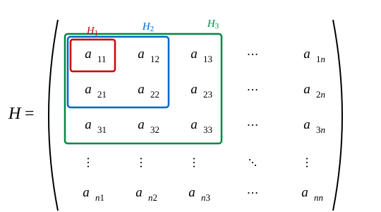
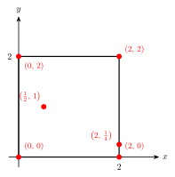

第9回：n変数の極値
9.1 2変数の極値判定とヘッセ行列
前回、停留点 \((a, b)\) における2次形式
の符号から極値を判定した（\(A = f_{xx}\), \(B = f_{xy}\), \(C = f_{yy}\)）。これを行列の言葉で書き直す。
ヘッセ行列（Hessian matrix）
この対称行列 \(H\) をヘッセ行列（Hessian）という。
固有値による解釈
\(H\) は実対称行列なので、直交行列 \(Q\) により対角化できる：
ここで \(\lambda_1\), \(\lambda_2\) は \(H\) の固有値である。
\(Q^T \begin{pmatrix} h \\ k \end{pmatrix} = \begin{pmatrix} \xi \\ \eta \end{pmatrix}\) とおくと
また
なので \((\xi, \eta)\) と \((h, k)\) は1対1に対応する。\(Q(h, k)\) の符号は \(\lambda_1\), \(\lambda_2\) の符号で決まる。
（1-1） \(\lambda_1 > 0\) かつ \(\lambda_2 > 0\) のとき
\(Q(\xi, \eta) > 0\)（ \(AC - B^2 > 0\) かつ \(A > 0\) と等価）
（1-2） \(\lambda_1 < 0\) かつ \(\lambda_2 < 0\) のとき
\(Q(\xi, \eta) < 0\)（ \(AC - B^2 > 0\) かつ \(A < 0\) と等価）
（2） \(\lambda_1\) と \(\lambda_2\) が異符号のとき
\(Q\) の符号は \(\xi\), \(\eta\) の値によって変わる → 鞍点（ \(AC - B^2 < 0\) と等価）
（3） \(\lambda_1 = 0\) または \(\lambda_2 = 0\) のとき
\(Q = 0\) となる方向が存在する → 判定不能（ \(AC - B^2 = 0\) と等価）
9.2 n変数への一般化
\(n\) 変数関数 \(f(x_1, \ldots, x_n)\) の停留点における2次近似は
ここで
が \(n\) 変数のヘッセ行列である。
正定値性と極値
\(H\) の固有値を \(\lambda_1, \lambda_2, \ldots, \lambda_n\) とすると：
(1-1) \(H\) の固有値がすべて正のとき（\(H\) が正定値）
\(\Rightarrow\) 極小
(1-2) \(H\) の固有値がすべて負のとき（\(H\) が負定値）
\(\Rightarrow\) 極大
(2) \(H\) の固有値に正と負が混在するとき（\(H\) が不定値）
\(\Delta \mathbf{x}^T H\, \Delta \mathbf{x}\) の符号が方向によって変わる \(\Rightarrow\) 鞍点
(3) \(H\) の固有値に0が含まれるとき（\(|H| = 0\)）
\(\Rightarrow\) 判定不能
首座小行列式による判定
固有値を直接求めるのは大変なので、首座小行列式（leading principal minors）を用いて判定する。
\(H\) の左上 \(k \times k\) 部分行列を \(H_k\) とする（\(1 \le k \le n\)）。

- \(|H_k| > 0\)（\(1 \le k \le n\)）\(\Rightarrow\) 正定値
- \(|-H_k| > 0\)（\(1 \le k \le n\)、すなわち \(|H_k|\) の符号が \((-1)^k\) と一致）\(\Rightarrow\) 負定値
9.3 n変数の極値判定
n変数関数の極値の判定
停留点 \(\mathbf{a}\) におけるヘッセ行列 \(H\) に対して：
Step 1. \(|H| = 0\) \(\Rightarrow\) 判定不能
Step 2. \(|H| \neq 0\) かつ \(|H_k| > 0\)（\(1 \le k \le n\)） \(\Rightarrow\) 極小
Step 3. \(|H| \neq 0\) かつ \(|-H_k| > 0\)（\(1 \le k \le n\)） \(\Rightarrow\) 極大
Step 4. それ以外 \(\Rightarrow\) 鞍点
2変数の場合との対応
\(n = 2\) のとき \(H = \begin{pmatrix} A & B \\ B & C \end{pmatrix}\) で
- \(|H_1| = A\), \(|H_2| = AC - B^2\)
Step 2（極小）：\(A > 0\) かつ \(AC - B^2 > 0\) → 前回の判定条件と一致する。
9.4 例題
例題1
\(f(x, y, z) = x^2 + y^2 + z^2 - 2x - 4y + 6z + 10\) の極値を求めよ。
解
停留点を求める。
停留点は \((1, 2, -3)\)。
2階偏導関数を求める。
ヘッセ行列は
首座小行列式を求める。
すべて正なので \(H\) は正定値。
\(\therefore\) \((1, 2, -3)\) で極小値 \(f(1, 2, -3) = 1 + 4 + 9 - 2 - 8 - 18 + 10 = -4\)
例題2
\(f(x, y, z) = x^2 + y^2 + z^2 + 2xy - 4xz\) の極値を調べよ。
解
停留点を求める。
\(f_x\) に代入すると \(2x - 2x - 8x = -8x = 0\) より \(x = 0\)。
停留点は \((0, 0, 0)\)。
ヘッセ行列は
首座小行列式を求める。
\(|H_2| = 0\) なので正定値でも負定値でもない。\(|H| \neq 0\) なので判定不能でもない。
\(\therefore\) \((0, 0, 0)\) は鞍点
9.5 閉区間の最大値・最小値
多変数関数の変数が境界のある閉領域上にあるとき、最大値と最小値が存在する。
最大値（最小値）は、
- 領域内部の極大値（極小値）
- 境界上での値
のいずれかである。
単純な境界の場合：代入消去法
境界が座標軸に平行な矩形領域の場合、境界上では1つの変数が定数になるので、残りの変数の1変数関数として調べればよい。
例：\(f(x, y) = xy^2 - x - y\) の \(0 \le x \le 2\), \(0 \le y \le 2\) における最大値・最小値
解

内部の停留点を求める。
停留点は \(\left(\dfrac{1}{2},\, 1\right)\) で、\(f\!\left(\dfrac{1}{2},\, 1\right) = \dfrac{1}{2} - \dfrac{1}{2} - 1 = -1\)。
境界上の値を調べる。
\(f(x, 0) = -x\) （\(0 \le x \le 2\)）：単調減少
\(f(x, 2) = 4x - x - 2 = 3x - 2\) （\(0 \le x \le 2\)）：単調増加
\(f(0, y) = -y\) （\(0 \le y \le 2\)）：単調減少
\(f(2, y) = 2y^2 - 2 - y\) （\(0 \le y \le 2\)）：\(\dfrac{d}{dy}(2y^2 - y - 2) = 4y - 1 = 0\) より \(y = \dfrac{1}{4}\)
\(f\!\left(2, \dfrac{1}{4}\right) = 2 \cdot \dfrac{1}{16} - 2 - \dfrac{1}{4} = \dfrac{1}{8} - \dfrac{9}{4} = -\dfrac{17}{8}\)
候補をすべて比較する。
| 点 | \(f\) の値 |
|---|---|
| \((0, 0)\) | \(0\) |
| \((0, 2)\) | \(-2\) |
| \((2, 0)\) | \(-2\) |
| \((2, 2)\) | \(4\) |
| \(\left(\frac{1}{2}, 1\right)\) | \(-1\) |
| \(\left(2, \frac{1}{4}\right)\) | \(-\frac{17}{8}\) |
\(\therefore\) 最大値 \(f(2, 2) = 4\)、最小値 \(f\!\left(2, \dfrac{1}{4}\right) = -\dfrac{17}{8}\)
複雑な境界の場合
境界が曲線で表されるような場合は、次回学ぶラグランジュの未定乗数法を用いる。
演習問題
演習1
\(f(x, y, z) = xy + yz + zx - x - y - z\) の極値を調べよ。
解答
停留点を求める。
\(f_x - f_y\) より \(y - x = 0\)、すなわち \(x = y\)。
\(f_z\) に代入して \(2x - 1 = 0\) より \(x = \dfrac{1}{2}\)。
\(f_x\) より \(z = 1 - y = \dfrac{1}{2}\)。
停留点は \(\left(\dfrac{1}{2},\, \dfrac{1}{2},\, \dfrac{1}{2}\right)\)。
ヘッセ行列を求める。
首座小行列式を求める。
\(|H| = 2 \neq 0\) なので判定不能ではない。
\(|H_1| = 0\) より正定値でも負定値でもない。
\(\therefore\) \(\left(\dfrac{1}{2},\, \dfrac{1}{2},\, \dfrac{1}{2}\right)\) は鞍点
演習2
\(f(x, y, z) = \sin x + \sin y + \sin z - \sin x \sin y - \sin y \sin z - \sin z \sin x\) の \(0 < x, y, z < \dfrac{\pi}{2}\) における極値を調べよ。
解答
停留点を求める。
\(0 < x, y, z < \dfrac{\pi}{2}\) では \(\cos x, \cos y, \cos z \neq 0\) なので
辺々足して \(2(\sin x + \sin y + \sin z) = 3\) より \(\sin x + \sin y + \sin z = \dfrac{3}{2}\)。
よって \(\sin x = \sin y = \sin z = \dfrac{1}{2}\) すなわち \(x = y = z = \dfrac{\pi}{6}\)。
2階偏導関数を求める。
\(\left(\dfrac{\pi}{6}, \dfrac{\pi}{6}, \dfrac{\pi}{6}\right)\) で評価する。\(\sin\dfrac{\pi}{6} = \dfrac{1}{2}\), \(\cos\dfrac{\pi}{6} = \dfrac{\sqrt{3}}{2}\) より
ヘッセ行列は
首座小行列式を求める。
\(|H| \neq 0\) なので判定不能ではない。\(|H_1| = 0\) より正定値でも負定値でもない。
\(\therefore\) \(\left(\dfrac{\pi}{6},\, \dfrac{\pi}{6},\, \dfrac{\pi}{6}\right)\) は鞍点